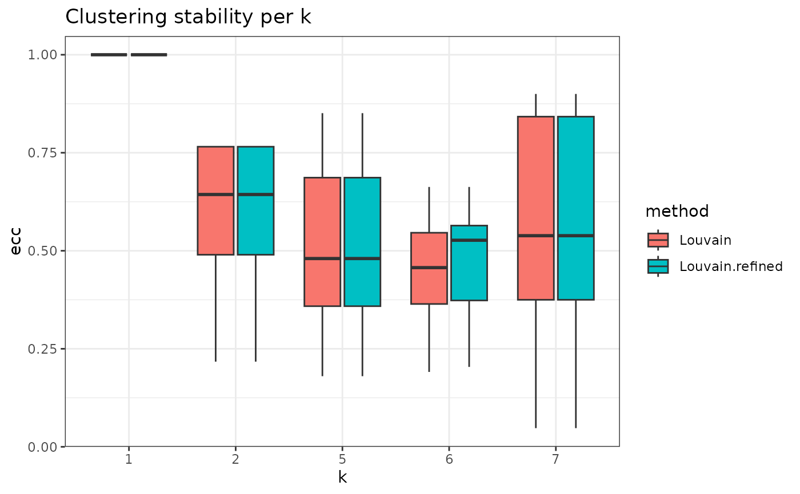

Clustering Method per value Stability Boxplot
Source:R/stability-3-graph-clustering.R
plot_clustering_per_value_stability.RdDisplay EC consistency across clustering methods, calculated for each value of the resolution parameter or the number of clusters.
Usage
plot_clustering_per_value_stability(
clust_object,
value_type = c("k", "resolution")
)Value
A ggplot2 object with the EC consistency distributions grouped by
the clustering methods. Higher consistency indicates a more stable clustering.
The X axis is decided by the value_type parameter.
Examples
set.seed(2024)
# create an artificial PCA embedding
pca_embedding <- matrix(runif(100 * 30), nrow = 100)
rownames(pca_embedding) <- paste0("cell_", seq_len(nrow(pca_embedding)))
colnames(pca_embedding) <- paste0("PC_", 1:30)
adj_matrix <- getNNmatrix(
RANN::nn2(pca_embedding, k = 10)$nn.idx,
10,
0,
-1
)$nn
rownames(adj_matrix) <- paste0("cell_", seq_len(nrow(adj_matrix)))
colnames(adj_matrix) <- paste0("cell_", seq_len(ncol(adj_matrix)))
# alternatively, the adj_matrix can be calculated
# using the `Seurat::FindNeighbors` function.
clust_diff_obj <- assess_clustering_stability(
graph_adjacency_matrix = adj_matrix,
resolution = c(0.5, 1),
n_repetitions = 10,
clustering_algorithm = 1:2,
verbose = FALSE
)
plot_clustering_per_value_stability(clust_diff_obj)
